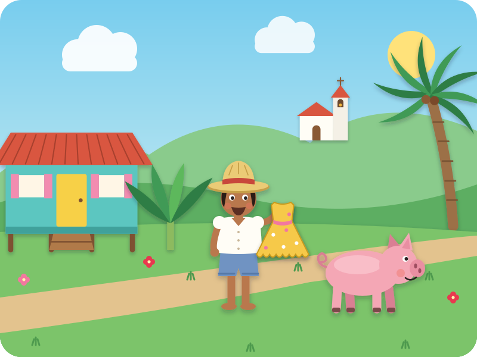
A folk tale from Puerto Rico
Juan Bobo and the Pig
"Story, story — are your ears open?" Kai: "Open!"
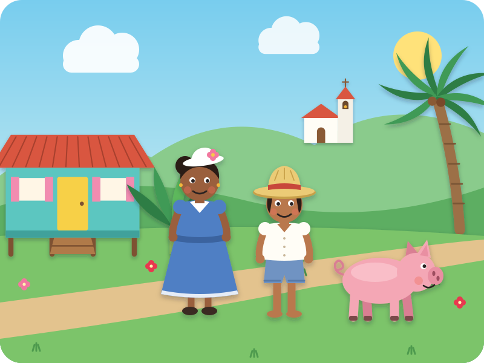
In the green hills of Puerto Rico lived a boy called Juan Bobo. He lived with his Mamá — and their fat pink pig.
The pig said "Oink, oink!" Kai oinks
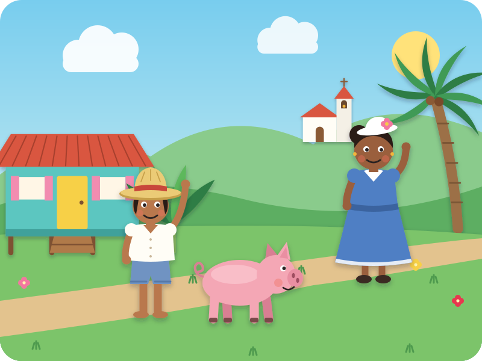
One Sunday, Mamá put on her best blue dress. "I'm going to church, Juan Bobo. Watch the pig! And don't let her get dirty."
"Sí, Mamá!" said Juan Bobo. Kai waves bye-bye
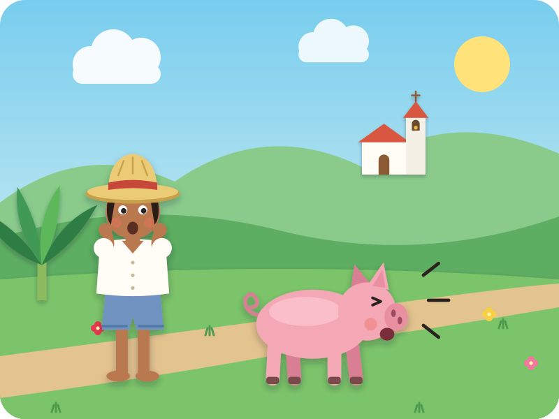
But the pig looked down the road after Mamá, and she squealed and squealed:
"Oink, oink! SQUEAL!" Kai squeals as loud as a pig
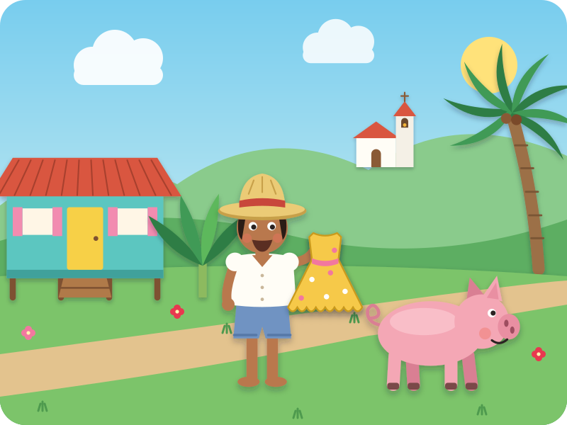
"Oh!" said Juan Bobo. "You want to go to church too! But you can't go like that. You need to dress up!"
He ran inside and found Mamá's fancy yellow party dress.
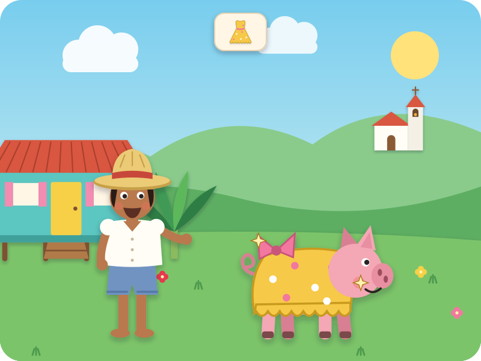
On went the yellow dress, with a big pink bow. The pig wiggled. "Oink, oink!"
What's she got on? "A dress!" Kai: "Dress!"
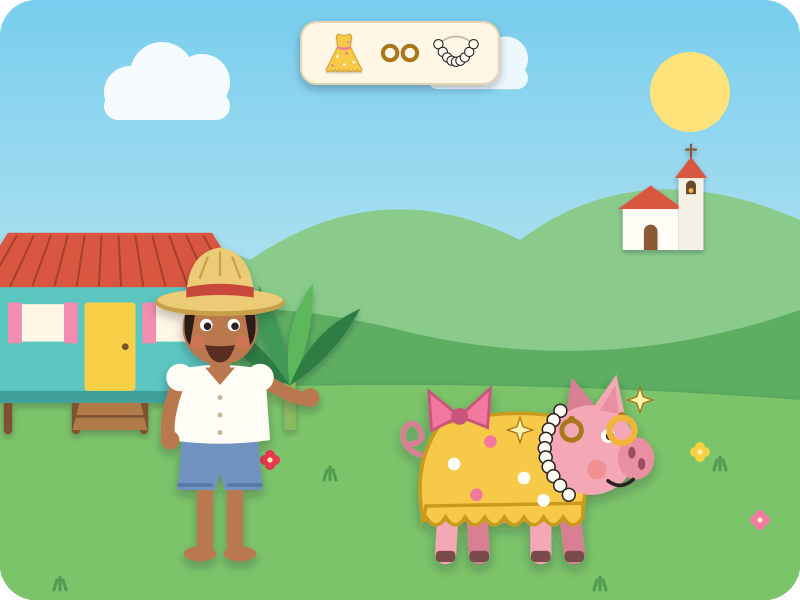
Then Mamá's gold earrings, and her long pearl necklace. So shiny!
"Dress, earrings, necklace!" Kai says the list
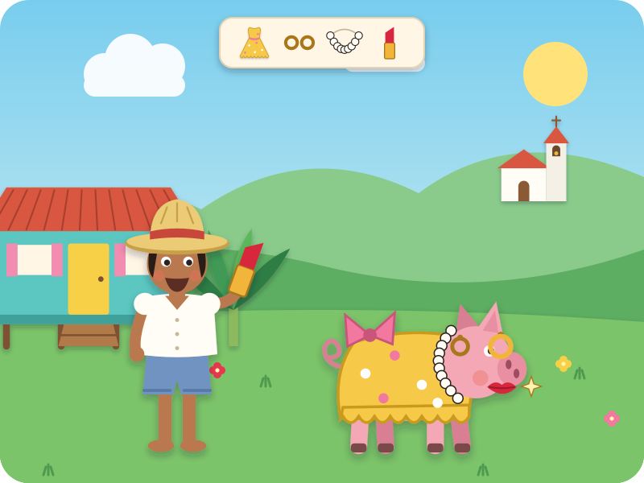
Then Mamá's red lipstick. Mwah! Kai blows a kiss
"Dress, earrings, necklace, lipstick!"
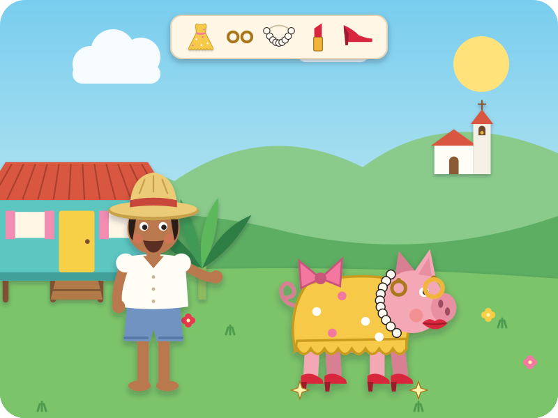
And last of all, Mamá's red high-heeled shoes — two pairs, because a pig has four feet!
"Dress, earrings, necklace, lipstick… and SHOES!" Kai says the whole list
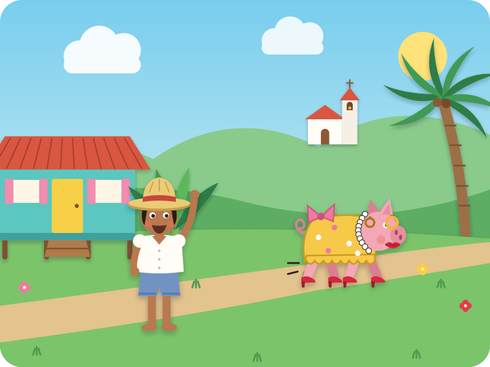
"Now you look beautiful," said Juan Bobo. "Off you go to church!"
Down the road she went, click-clack, click-clack Kai clicks his tongue — "Oink, oink!"
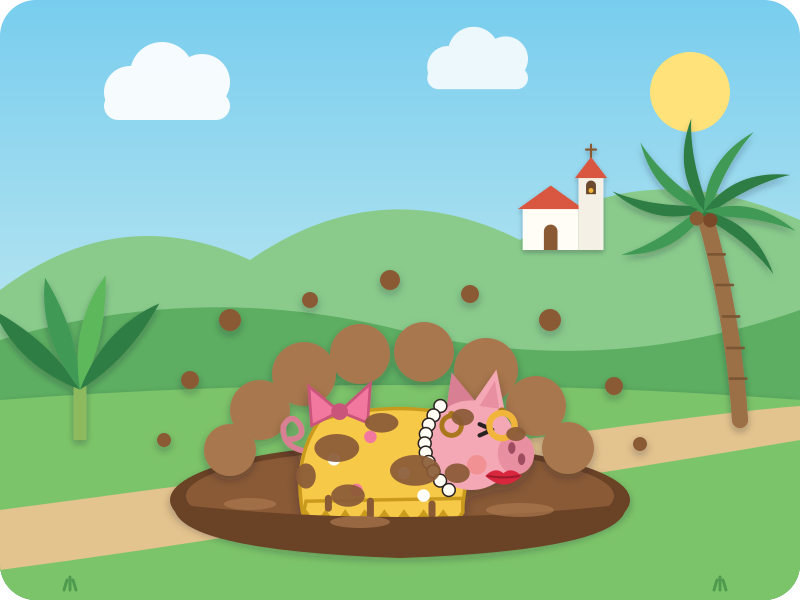
But by the road there was a big, brown, gooey mud puddle. And what does a pig love more than anything?
MUD! In she jumped — SPLASH! Kai splashes his hands
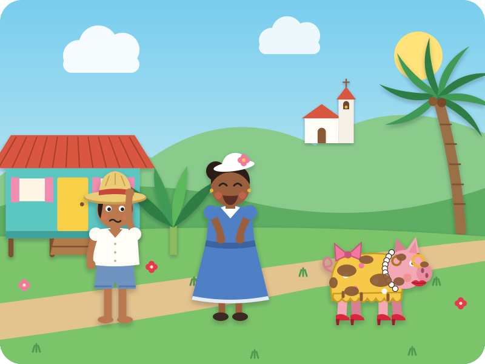
Mamá came home and saw her muddy pig in her yellow dress. "Juan Bobo!"
"She wanted to go to church too," said Juan Bobo. And Mamá laughed and laughed. "Ay, Juan Bobo! A pig is happiest being a pig!"
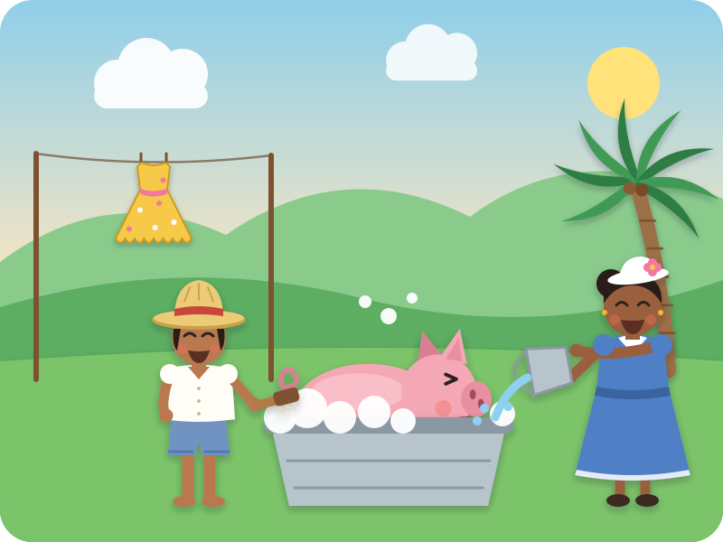
So they filled the big tub and scrubbed that pig. Scrub-a-dub-dub! Kai scrubs
"Oink, oink! Squeal!" — a happy squeal this time. And the yellow dress? It hung on the line to dry.
The End
"Snip, snap, snout — this tale's told out."
Swipe back to read it again
Driving? Tell it without the page · six beats
The picture book is for home, bedtime, or a passenger. In the car, tell it from memory — bold is Kai's part.
- Juan Bobo lives in the hills of Puerto Rico with his Mamá and their fat pink pig — "Oink, oink!"
- Mamá goes to church: "Watch the pig, and don't let her get dirty!" But the pig wants to go too — "Oink, oink! SQUEAL!"
- Juan Bobo decides she needs to dress up: first Mamá's yellow dress — "Dress!" — then earrings and a necklace — "Dress, earrings, necklace!"
- Then lipstick (mwah!) and four high-heeled shoes — "Dress, earrings, necklace, lipstick… and SHOES!"
- Off she trots, click-clack, and jumps straight into the mud puddle — SPLASH!
- Mamá comes home and laughs — "A pig is happiest being a pig!" — and they all scrub the pig clean: scrub-a-dub-dub!
After the story · car-friendly wondering
"Can you remember everything the pig put on? Dress, earrings…?"
"Why do you think the pig jumped in the mud?"
"If you dressed up our car, what would it wear?"
Where this story comes from
Juan Bobo ("Silly John") is the best-loved noodlehead of Puerto Rican folklore: a country boy whose well-meant mistakes are told as funny stories, in many different versions. Juan Bobo tales are among the Puerto Rican folk tales collected by J. Alden Mason and edited by Aurelio M. Espinosa, published in instalments in the Journal of American Folklore in the 1920s — though we have not checked whether this particular pig story is one of them. In English, the story of the pig dressed up for church has been retold in several English picture books, among them Felix Pitre's Juan Bobo and the Pig: A Puerto Rican Folktale (Dutton/Lodestar, 1993), illustrated by Christy Hale; reviews say Pitre based it on a version he heard from his grandfather. Versions differ in what the pig wears and how it ends, and in many Juan Bobo stories his foolishness gets him into trouble. This retelling is our own, for a 4-year-old: Mamá laughs instead of scolding, and everyone scrubs the pig clean together. The growing dressing-up list, the yellow dress, the two pairs of shoes and the washtub ending are our picture-book choices, not details we can trace to any one older telling.